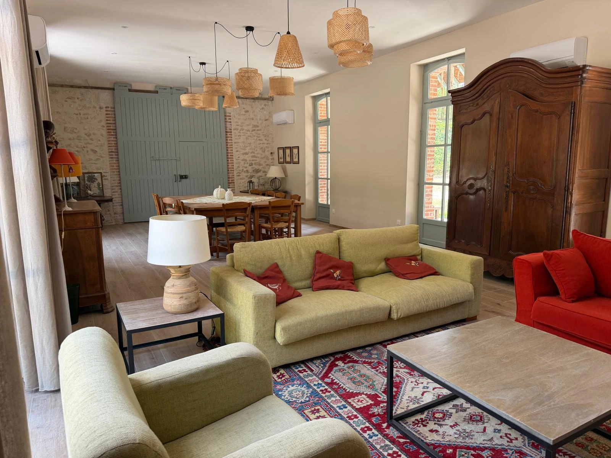
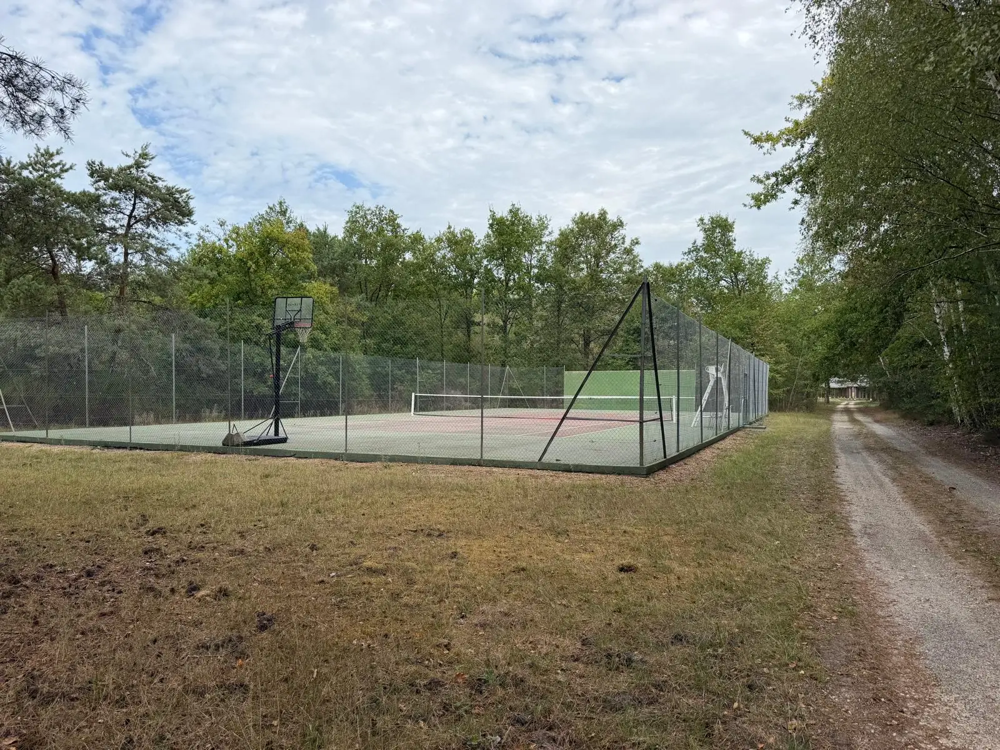
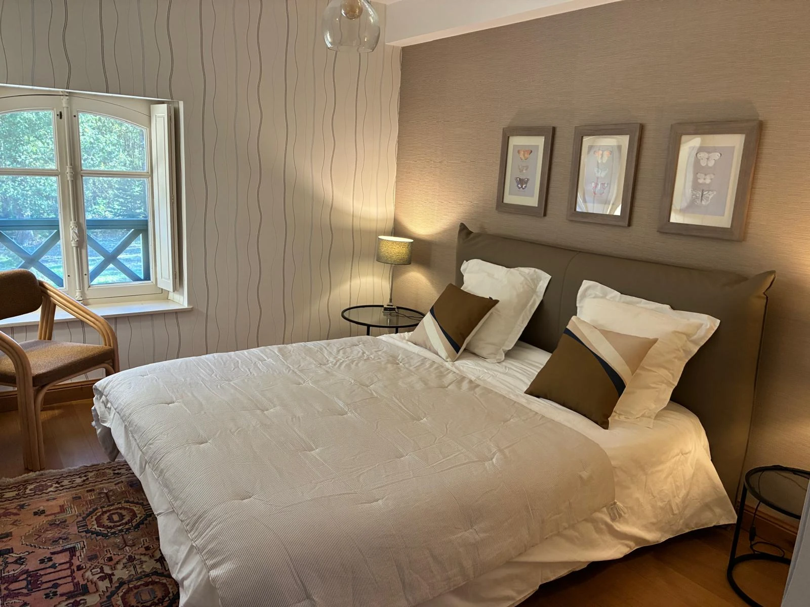

Votre week-end en Sologne
Selles-Saint-DenisGîte des Communs de Montifaut, les anciens communs du château








10personnes
4chambres
160 m²sur 2 niveaux
20places en terrasse
250 €la nuit, 4 pers.
Cousinades · Anniversaires · Week-ends entre amis · Retraites · Séminaires
Le gîte
- Grand séjour, poêle à bois, climatisation réversible
- Cuisine : four traiteur 5 feux, lave-vaisselle, 2 réfrigérateurs-congélateurs, raclette
- Télévision, wifi
Pour dormir
- 3 chambres avec un lit double
- 1 chambre à 4 lits simples
- Salle de bain (baignoire, double vasque), 2 WC
- Lit bébé, chaise haute sur demande
Dehors
- Terrasse couverte de 20 places, brasero, plancha
- Tennis, basket, ping-pong, pétanque, molki
- Jeux de société, poker, jeux d'enfants
- Grand parking, box pour chien sur accord
Pratique
- Draps, serviettes et ménage compris
- Arrivée autonome dès 17h, départ avant 11h
- 15 min des sorties A71 Salbris et A85 Romorantin
- Gare à 3,5 km · Chambord, Cheverny, Beauval (50 min)
Tarifs : 250 € la nuit pour 4 personnes, puis 15 € par personne et par nuit en plus (10 maximum) · 2 nuits minimum
Jusqu'à −20 % pour les longs séjours · tarifs majorés à Noël et lors des ponts
Jusqu'à −20 % pour les longs séjours · tarifs majorés à Noël et lors des ponts
Autour du gîte : étang et 2 circuits de randonnée à Selles-Saint-Denis · châteaux de Chambord, Cheverny et Blois · zoo de Beauval (50 min) · restaurants et commerces à 5 à 15 min
Réservez votre séjour
Calendrier, devis immédiat et réservation en ligne. Isabelle vous répond sous 48 h, en français, anglais ou allemand.
06 48 48 11 13
WhatsApp · ipconseils@orange.fr · gite-montifaut.fr
Scannez